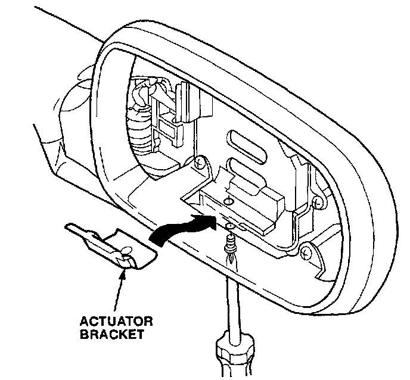

Body - Door Mirror Vibration
September 28, 1993BULLETIN NO.
92-010
YEAR
[NEW] 1991 - 92
MODEL
LEGEND
4-DOOR
VIN APPLICATION
[NEW] ALL
Door Mirror Vibrates
(Supersedes 92-010, dated June 8, 1992)
PROBLEM
The door mirror glass vibrates due to insufficient tension of the door mirror actuator bracket.
CORRECTIVE ACTION
Replace the actuator bracket and mounting screw
(see PARTS INFORMATION).
1. Working through the service hole, use a # 2 Phillips screwdriver to loosen the actuator retaining screw. (See mirror glass replacement in section 20 of the appropriate service manual.)
2. Remove the mirror and actuator assembly by lifting up, then pulling out the lower edge of the mirror.

3. Remove the 3 x 10 mm actuator retaining screw and the actuator bracket.
4. Position the new actuator bracket over the service hole.
5. Put the new screw on the screwdriver, and align the retaining bracket. Start the screw, but don't tighten it yet. Be careful to not cross-thread the screw.
6. Connect the two actuator connectors, and install the mirror assembly. Install the top edge first, then the bottom edge.
7. Tighten the retaining screw.
8. Turn the ignition switch ON, and check the mirror operation.
PARTS INFORMATION [NEW]
Actuator Bracket P/N 04769-SP0-J01
(Includes 4 x 8 mm screw)
WARRANTY CLAIM INFORMATION
In warranty:
The normal warranty applies.
Out of warranty:
Any repair performed after warranty expiration may be eligible for goodwill consideration by the District Service Manager or your Zone Office. You must request consideration, and get a decision, before starting work.
Operation number: 820150
Flat rate time: 0.2 hour
Failed P/N: 76210-SP0-A01
Defect code: 045
Contention code: B99

Disclaimer